24 Marinho
24.1 Pré-requisitos
Instalar e carregar estes pacotes.
Definir os diretórios.
# directory
dir.create("01_data_marinho")
dir.create("01_data_marinho/01_occurrences")
dir.create("01_data_marinho/02_variables")
dir.create("02_output_marinho")
sp_dir <- "02_output_marinho/"24.2 Ocorrências
24.2.1 Acessar dados de ocorrências marinhos
Vamos definir uma área para buscas as ocorrências marinhas.
# brazil
brazil <- World %>%
dplyr::filter(iso_a3 == "BRA")
brazil_buffer <- brazil %>%
terra::vect() %>%
terra::buffer(500000) %>%
sf::st_as_sf() %>%
sf::st_difference(sf::st_union(World)) %>%
terra::vect()
tm_shape(brazil_buffer) +
tm_borders() +
tm_shape(brazil) +
tm_fill() +
tm_graticules(lines = FALSE)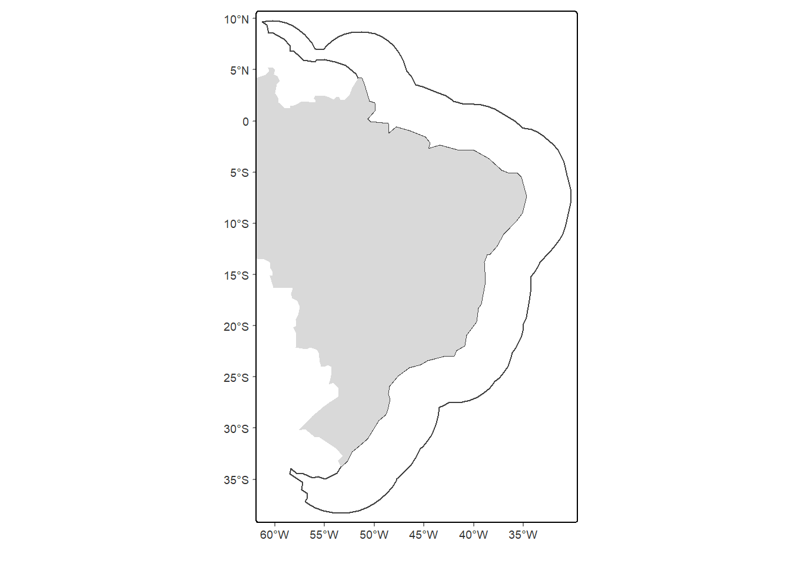
Download das ocorrências da tartaruga-marinha Eretmochelys imbricata.
Vamos fazer o download destas bases de dados:
- gbif: Global Biodiversity Information Facility (GBIF)
- vertnet: VertNet - Dados de vertebrados de coleções científicas
- idigbio: iDigBio - Portal de digitalização de coleções biológicas dos EUA
- obis: Ocean Biodiversity Information System (OBIS)
- ala: Atlas of Living Australia (ALA)
Searched: gbif, vertnet, idigbio, obis, ala
Occurrences - Found: 9,699, Returned: 300
Search type: Scientific
gbif: Eretmochelys imbricata (100)
obis: Eretmochelys imbricata (100)
ala: Eretmochelys imbricata (100)# A tibble: 6 × 6
name longitude latitude prov date key
<chr> <dbl> <dbl> <chr> <date> <chr>
1 Eretmochelys imbricata (Linnaeus, 1… -38.1 -12.6 gbif 2026-01-14 6130…
2 Eretmochelys imbricata (Linnaeus, 1… -35.0 -8.26 gbif 2026-01-06 6131…
3 Eretmochelys imbricata (Linnaeus, 1… -38.6 -3.87 gbif 2026-01-31 6133…
4 Eretmochelys imbricata (Linnaeus, 1… -52.5 5.39 gbif 2025-01-05 5037…
5 Eretmochelys imbricata (Linnaeus, 1… -34.9 -8.47 gbif 2025-02-20 5077…
6 Eretmochelys imbricata (Linnaeus, 1… -34.8 -7.98 gbif 2025-02-12 5077…# vector
occ_data_sf <- occ_data %>%
sf::st_as_sf(coords = c("longitude", "latitude"), crs = 4326)
occ_data_sf <- occ_data_sf[sf::st_as_sf(brazil_buffer), ]
# filter
occ_data <- occ_data_sf %>%
dplyr::mutate(
x = sf::st_coordinates(.)[, 1],
y = sf::st_coordinates(.)[, 2]) %>%
sf::st_drop_geometry()
head(occ_data)# A tibble: 6 × 6
name prov date key x y
<chr> <chr> <date> <chr> <dbl> <dbl>
1 Eretmochelys imbricata (Linnaeus, 1766) gbif 2026-01-14 6130658… -38.1 -12.6
2 Eretmochelys imbricata (Linnaeus, 1766) gbif 2025-01-05 5037273… -52.5 5.39
3 Eretmochelys imbricata (Linnaeus, 1766) gbif 2025-02-20 5077055… -34.9 -8.47
4 Eretmochelys imbricata (Linnaeus, 1766) gbif 2025-02-12 5077089… -34.8 -7.98
5 Eretmochelys imbricata (Linnaeus, 1766) gbif 2025-02-16 5760913… -34.8 -7.80
6 Eretmochelys imbricata (Linnaeus, 1766) gbif 2025-03-21 5108083… -34.9 -7.98Vamos fazer um mapa para conferir os pontos.
# map
tm_shape(brazil_buffer) +
tm_borders() +
tm_shape(brazil) +
tm_fill() +
tm_shape(occ_data_sf) +
tm_bubbles(size = .3, fill = "black") +
tm_graticules(lines = FALSE)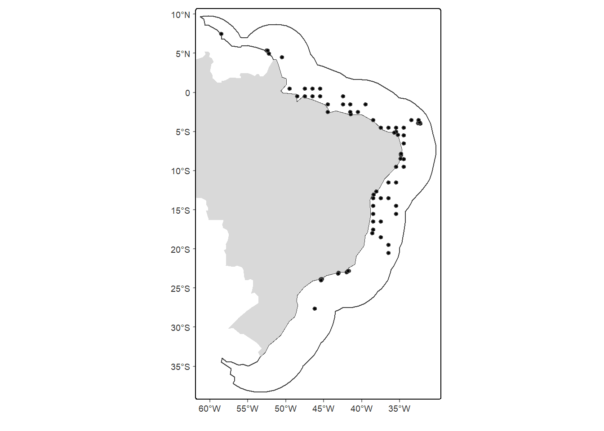
24.3 Variáveis
24.3.1 Acessar dados de variáveis marinhas
Vamos definir uma área para downlod das variáveis marinhas.
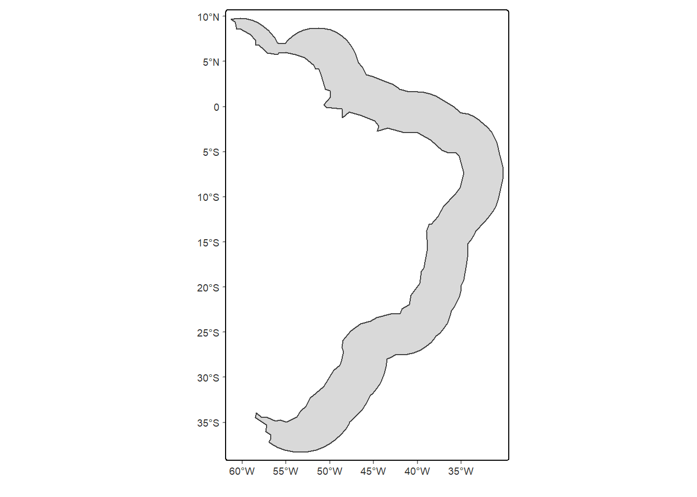
Download das variáveis para modelar a tartaruga-marinha Eretmochelys imbricata.
Vamos fazer o download do BIO-ORACLE. Eles têm essas variáveis:
- chl: Chlorophyll
- clt: Total Cloud Fraction
- dfe: Dissolved Iron
- mlotst: Mixed Layer Depth
- no3: Nitrate
- o2: Dissolved Molecular Oxygen
- ph: pH
- phyc: Total Phytoplankton
- phyc: Phytoplankton
- po4: Phosphate
- si: Silicate
- siconc: Sea Ice Cover
- sithick: Sea Ice Thickness
- so: Salinity
- sws: Sea Water Speed
- tas: Air Temperature
- terrain: Terrain
- thetao: Ocean Temperature
Vamos escolher algumas variáveis e listar elas.
var_names <- c("thetao", "chl", "terrain")
var_names[1] "thetao" "chl" "terrain"# list variables
biooracle_var <- biooracler::list_layers()
head(biooracle_var)# A tibble: 6 × 3
dataset_id title summary
<chr> <chr> <chr>
1 tas_baseline_2000_2020_depthsurf Bio-Oracle AirTemperature [depthSurf… "Uses …
2 tas_ssp119_2020_2100_depthsurf Bio-Oracle AirTemperature [depthSurf… "Uses …
3 tas_ssp126_2020_2100_depthsurf Bio-Oracle AirTemperature [depthSurf… "Uses …
4 tas_ssp245_2020_2100_depthsurf Bio-Oracle AirTemperature [depthSurf… "Uses …
5 tas_ssp370_2020_2100_depthsurf Bio-Oracle AirTemperature [depthSurf… "Uses …
6 tas_ssp460_2020_2100_depthsurf Bio-Oracle AirTemperature [depthSurf… "Uses …biooracle_var_filtered <- biooracle_var %>%
dplyr::filter(stringr::str_detect(dataset_id, paste0(var_names, collapse = "|"))) %>%
dplyr::filter(stringr::str_detect(title, "Baseline|Terrain")) %>%
dplyr::filter(stringr::str_detect(title, "depthMin|Terrain"))
head(biooracle_var_filtered)# A tibble: 3 × 3
dataset_id title summary
<chr> <chr> <chr>
1 chl_baseline_2000_2018_depthmin Bio-Oracle Chlorophyll [depthMin] … "Uses …
2 thetao_baseline_2000_2019_depthmin Bio-Oracle OceanTemperature [depth… "Uses …
3 terrain_characteristics Bio-Oracle Terrain characteristics… "Uses …Vamos fazer algumas escolhas para download.
# details to download
dataset_id <- biooracle_var_filtered$dataset_id
time <- c('2000-01-01T00:00:00Z', '2010-01-01T00:00:00Z')
longitude <- sf::st_bbox(brazil_buffer)[c(1, 3)]
latitude <- sf::st_bbox(brazil_buffer)[c(2, 4)]
constraints <- list(time, latitude, longitude)
names(constraints) <- c("time", "latitude", "longitude")
constraints_terrain <- constraints
constraints_terrain$time <- c("1970-01-01T00:00:00Z", "1970-01-01T00:00:00Z")Vamos fazer o download em um diretório temporário e selecionar apenas as variáveis médias.
# download
var01 <- biooracler::download_layers(
dataset_id = dataset_id[1],
constraints = constraints,
fmt = "raster",
directory = tempdir(),
verbose = TRUE)
var01 <- var01[[7]]
var02 <- biooracler::download_layers(
dataset_id = dataset_id[2],
constraints = constraints,
fmt = "raster",
directory = tempdir(),
verbose = TRUE)
var02 <- var02[[7]]
var03 <- biooracler::download_layers(
dataset_id = dataset_id[3],
constraints = constraints_terrain,
fmt = "raster",
directory = tempdir(),
verbose = TRUE)
var03 <- var03[[4]]Vamos fazer o corte das variáveis para nossa área de interesse.
# bind and crop
var_brazil <- c(var01, var02, var03) %>%
terra::crop(brazil_buffer, mask = TRUE)
# names
names(var_brazil) <- stringr::str_replace_all(names(var_brazil), "_mean_1", "")
names(var_brazil) <- stringr::str_replace_all(names(var_brazil), "_mean", "")Vamos fazer um mapa para conferir as variáveis.
tm_shape(var_brazil) +
tm_raster(
col.scale = tm_scale_continuous(values = "brewer.blues"),
col.legend = tm_legend_hide()) +
tm_facets() +
tm_shape(brazil_buffer) +
tm_borders() +
tm_shape(brazil) +
tm_fill() +
tm_graticules(lines = FALSE) +
tm_layout(frame = FALSE)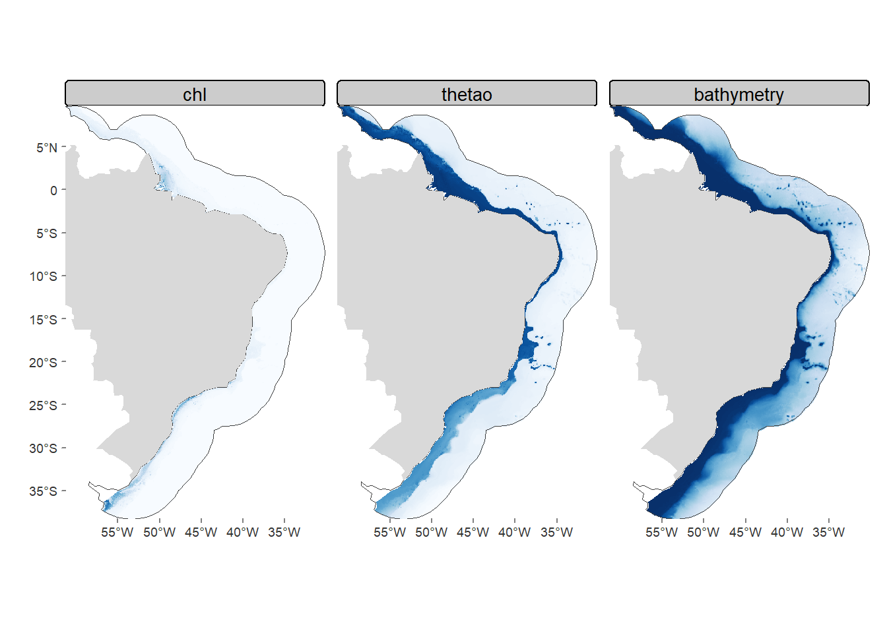
24.4 Modelos
Definir um número de cores do processador para paralelização.
## parameters ----
# cores
n_cores <- parallel::detectCores(logical = TRUE) - 224.4.1 Ocorrências e área de calibração
Vamos começar a ajustar os modelos. Primeiro, vamos ajustar os dados de ocorrências.
# A tibble: 6 × 5
id x y pr_ab occ_filter
<int> <dbl> <dbl> <dbl> <chr>
1 1 -38.1 -12.6 1 total
2 2 -52.5 5.39 1 total
3 3 -34.9 -8.47 1 total
4 4 -34.8 -7.98 1 total
5 5 -34.8 -7.80 1 total
6 6 -34.9 -7.98 1 total Vamos agora definir uma área de calibração.
## calibration area ----
ca <- brazil_buffer
# map
tm_shape(brazil_buffer) +
tm_borders() +
tm_shape(brazil) +
tm_fill() +
tm_shape(sf::st_as_sf(occ_sp, coords = c("x", "y"), crs = 4326)) +
tm_bubbles(size = .3, fill = "black") +
tm_graticules(lines = FALSE) +
tm_layout(frame = FALSE)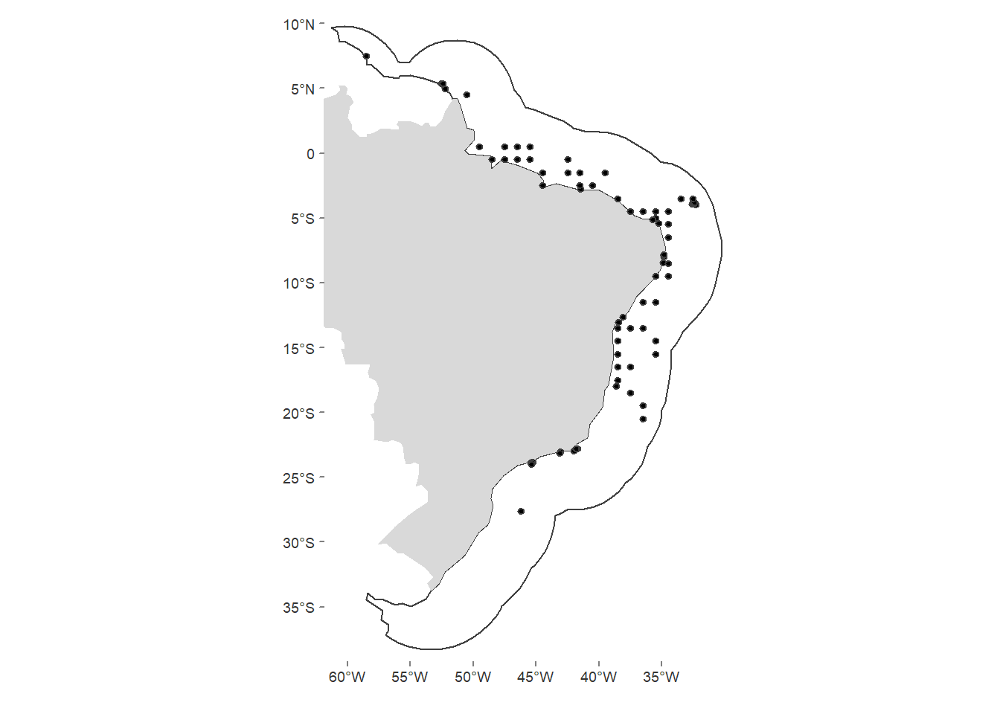
24.4.2 Variáveis e correlação
Vamos conferir a correlação entre as variáveis e depois fazer uma padronização das mesmas.
## collinearity variables ----
var_ca <- var_brazil
var_ca_colin <- flexsdm::correct_colinvar(env_layer = var_ca,
method = c("vif", th = "5"))
var_ca_sel_names <- var_ca_colin$vif_table$Variables
var_ca_sel <- terra::scale(var_ca_colin$env_layer)
tm_shape(var_ca_sel) +
tm_raster(
col.scale = tm_scale_continuous(values = "brewer.blues"),
col.legend = tm_legend_hide()) +
tm_facets() +
tm_shape(brazil_buffer) +
tm_borders() +
tm_shape(brazil) +
tm_fill() +
tm_graticules(lines = FALSE) +
tm_layout(frame = FALSE)
24.4.3 Filtro ambiental das ocorrências
Vamos agora fazer um filtro ambiental e geográfico das ocorrências para reduzir o viés de amostragem.
## occurrences environmental filtering ----
occ_sp_env_filt <- flexsdm::occfilt_env(
data = occ_sp,
x = "x",
y = "y",
id = "id",
env_layer = var_ca_sel,
nbins = c(5, 10, 15, 20, 25, 30))
occ_sp_env_filt_sel <- flexsdm::occfilt_select(
occ_list = occ_sp_env_filt,
x = "x",
y = "y",
env_layer = var_ca_sel,
filter_prop = TRUE)
occ_sp_filt <- occ_sp_env_filt_sel$occ %>%
dplyr::mutate(pr_ab = 1, occ_filter = "filtered")
tm_shape(brazil_buffer) +
tm_borders() +
tm_shape(brazil) +
tm_fill() +
tm_shape(terra::vect(rbind(occ_sp, occ_sp_filt), geom = c("x", "y"), crs = "EPSG:4326")) +
tm_dots(fill = "occ_filter",
fill.scale = tm_scale_categorical(values = c("black", "red")),
fill.legend = tm_legend(position = tm_pos_in(pos.h = "right", pos.v = "bottom")))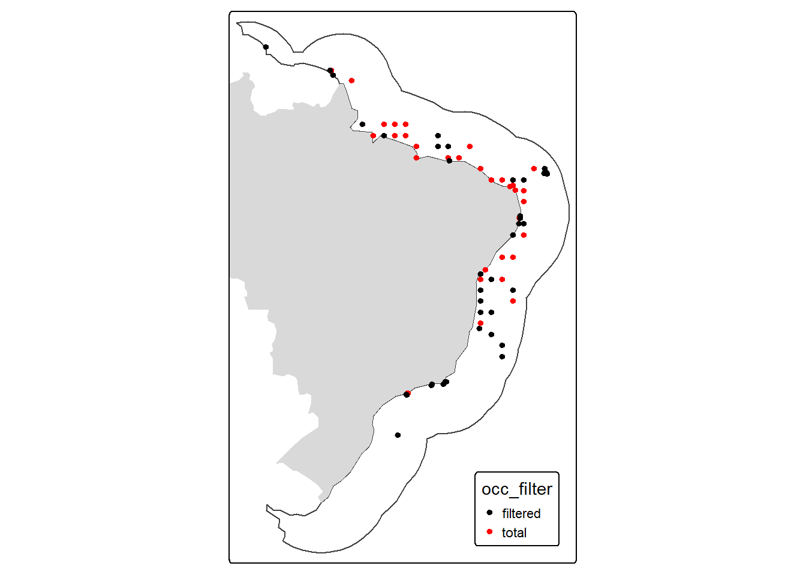
24.4.4 Amostragem das pseudoausência e pontos de fundo
Vamos fazer o sorteio dos pontos de pseudoausência e ponto de fundo (background). O primeiro é para os algoritmos que dependem de ausência. O segundo, para os algoritmos que usando pontos de fundo, como o MaxEnt.
### pseudo-absence sampling ----
psa <- flexsdm::sample_pseudoabs(
data = occ_sp_filt,
x = "x",
y = "y",
n = nrow(occ_sp_filt) * 1,
method = c(method = "geoenv_const", width = "100000", env = var_ca_sel),
rlayer = var_ca_sel,
calibarea = ca)
head(psa)# A tibble: 6 × 3
x y pr_ab
<dbl> <dbl> <dbl>
1 -37.0 -24.7 0
2 -49.1 1.52 0
3 -53.0 -33.6 0
4 -39.6 -0.425 0
5 -54.0 -35.1 0
6 -33.1 -5.28 0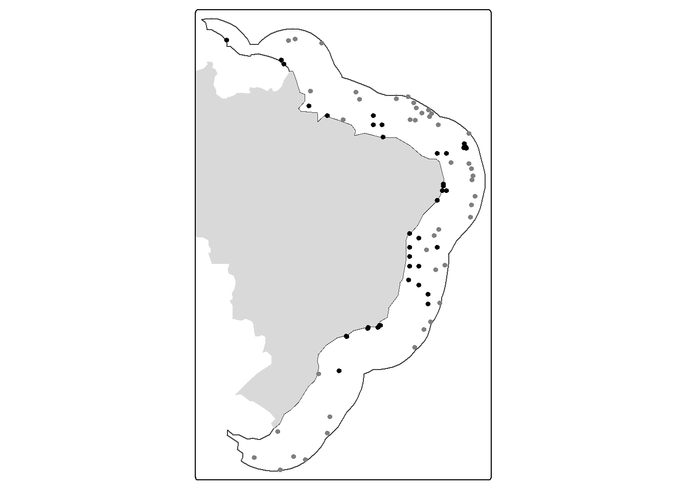
### background sampling ----
bg <- flexsdm::sample_background(
data = occ_sp_filt,
x = "x",
y = "y",
n = 1000,
method = "thickening",
rlayer = var_ca_sel,
calibarea = ca)
head(bg)# A tibble: 6 × 3
x y pr_ab
<dbl> <dbl> <dbl>
1 -34.8 -16.7 0
2 -49.4 -29.3 0
3 -37.6 -15.8 0
4 -36.5 -21.4 0
5 -38.4 -24.9 0
6 -35.5 -12.2 0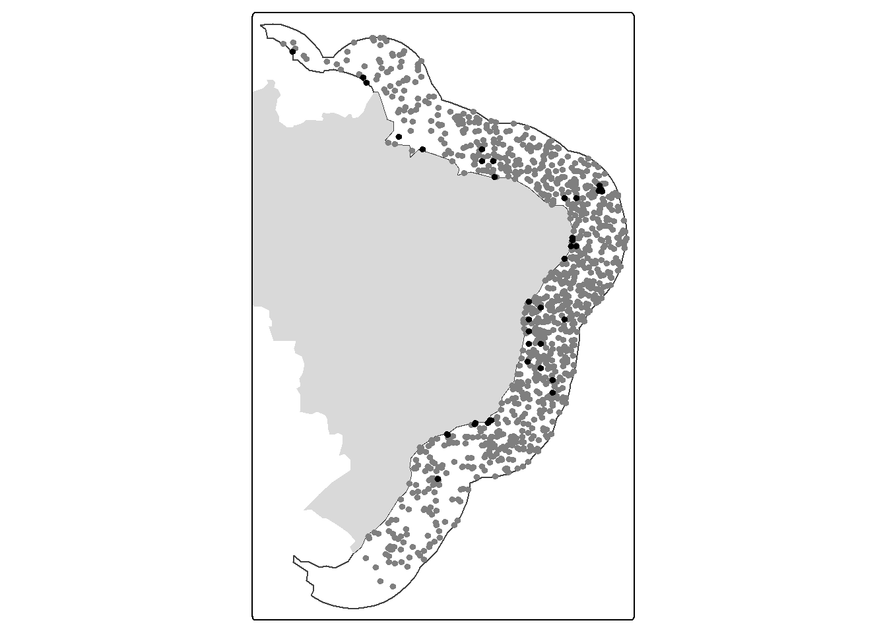
24.4.5 Partição dos dados
Vamos preparar agora o partionamento dos dados em treino (ajuste) e teste (avaliação) dos modelos.
### data partitioning ----
#### pseudoabsence ----
occ_sp_filt_psa <- rbind(occ_sp_filt[, 2:4], psa)
n_part_while <- 5
min_occ <- ifelse(nrow(occ_sp_filt) >= 30, 10, 5)
occ_sp_filt_psa_part <- NA
while(any(is.na(occ_sp_filt_psa_part))){
occ_sp_filt_psa_part <- flexsdm::part_sblock(
data = occ_sp_filt_psa,
env_layer = var_ca_sel,
pr_ab = "pr_ab",
x = "x",
y = "y",
n_part = n_part_while,
min_occ = min_occ,
prop = .5)
n_part_while <- n_part_while - 1
}
occ_sp_filt_psa_part_grid_ca <- flexsdm::get_block(env_layer = var_ca_sel,
best_grid = occ_sp_filt_psa_part$grid)
n_part_color <- cols4all::c4a("magma", n = max(occ_sp_filt_psa_part$part$.part))
n_part_color_occs <- cols4all::c4a("set1", n = max(occ_sp_filt_psa_part$part$.part))
tm_shape(brazil_buffer) +
tm_borders() +
tm_shape(brazil) +
tm_fill() +
tm_shape(occ_sp_filt_psa_part_grid_ca) +
tm_raster(col.legend = tm_legend(show = FALSE),
col.scale = tm_scale_categorical(values = n_part_color)) +
tm_shape(ca) +
tm_borders(col = "red") +
tm_shape(terra::vect(occ_sp_filt_psa_part$part, geom = c("x", "y"), crs = "EPSG:4326")) +
tm_dots(fill = ".part",
shape = "pr_ab",
size = .5,
fill.scale = tm_scale_categorical(values = n_part_color_occs),
fill.legend = tm_legend(position = tm_pos_in(pos.h = "right", pos.v = "bottom")),
shape.scale = tm_scale_categorical(values = c(17, 16)),
shape.legend = tm_legend(position = tm_pos_in(pos.h = "right", pos.v = "bottom")))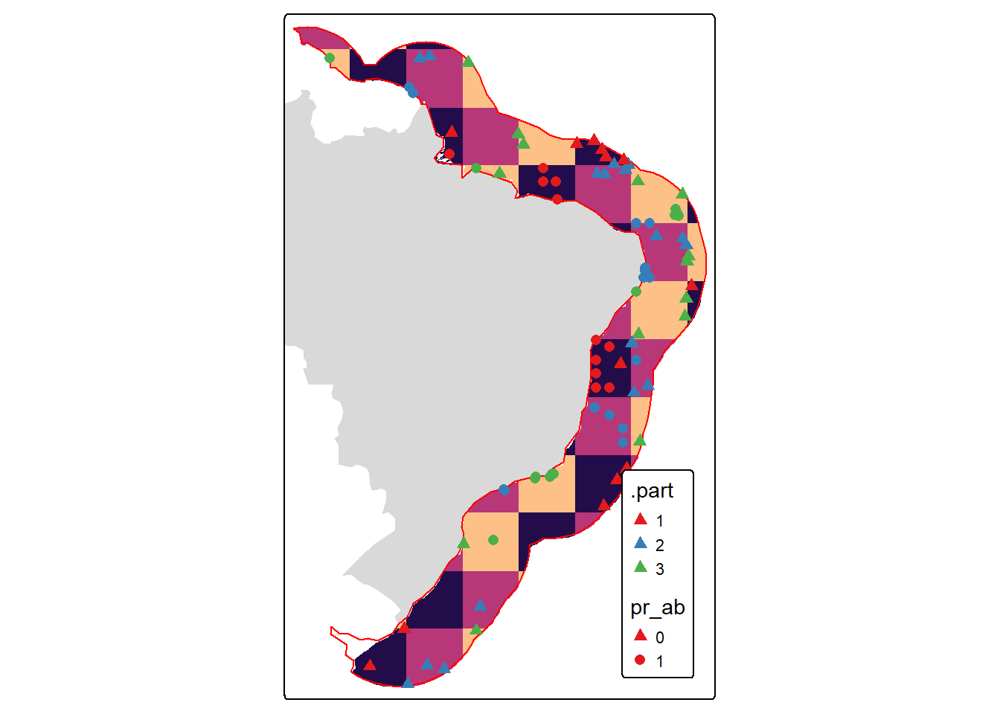
#### background ----
bg_part <- flexsdm::sdm_extract(
data = bg,
x = "x",
y = "y",
env_layer = occ_sp_filt_psa_part$grid)
tm_shape(brazil_buffer) +
tm_borders() +
tm_shape(brazil) +
tm_fill() +
tm_shape(occ_sp_filt_psa_part_grid_ca) +
tm_raster(col.legend = tm_legend(show = FALSE),
col.scale = tm_scale_categorical(values = n_part_color)) +
tm_shape(ca) +
tm_borders(col = "red") +
tm_shape(terra::vect(bg_part, geom = c("x", "y"), crs = "EPSG:4326")) +
tm_dots(fill = ".part",
size = .5,
fill.scale = tm_scale_categorical(values = n_part_color_occs),
fill.legend = tm_legend(position = tm_pos_in(pos.h = "right", pos.v = "bottom")))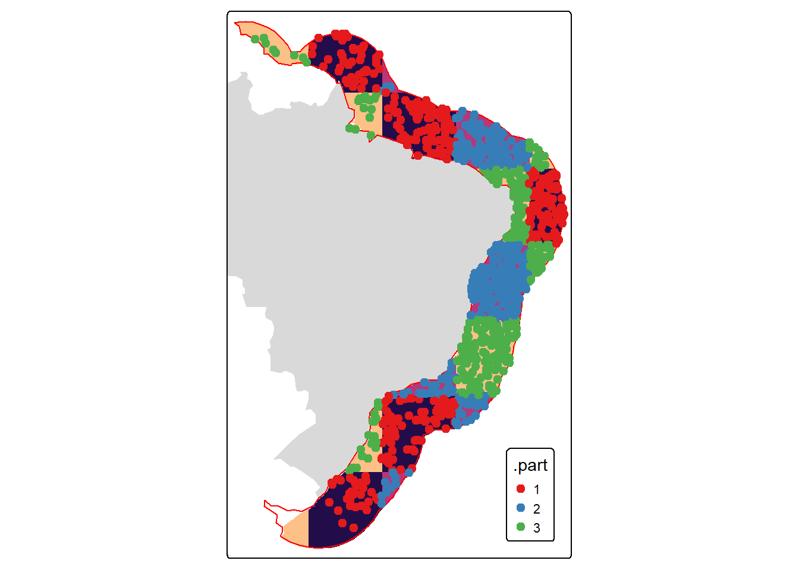
24.4.6 Extração dos dados ambientais
Vamos agora extrair os dados ambientais para os pontos de ocorrência, pseudoausência e de fundo.
### extracting environmental values ----
occ_sp_filt_psa_part_data <- flexsdm::sdm_extract(
data = occ_sp_filt_psa_part$part,
x = "x",
y = "y",
env_layer = var_ca_sel,
filter_na = TRUE)
head(occ_sp_filt_psa_part_data)# A tibble: 6 × 7
x y pr_ab .part chl thetao bathymetry
<dbl> <dbl> <dbl> <int> <dbl> <dbl> <dbl>
1 -52.5 5.39 1 1 0.605 1.96 1.43
2 -34.9 -8.47 1 3 -0.0111 2.09 1.43
3 -34.8 -7.98 1 3 0.0393 2.11 1.44
4 -34.8 -7.80 1 3 0.0786 2.12 1.44
5 -52.3 4.99 1 1 0.748 2.17 1.44
6 -45.5 -23.9 1 2 2.16 1.61 1.43bg_part_data <- flexsdm::sdm_extract(
data = bg_part,
x = "x",
y = "y",
env_layer = var_ca_sel,
filter_na = TRUE)
head(bg_part_data)# A tibble: 6 × 7
x y pr_ab .part chl thetao bathymetry
<dbl> <dbl> <dbl> <int> <dbl> <dbl> <dbl>
1 -34.8 -16.7 0 2 -0.335 -0.672 -0.981
2 -49.4 -29.3 0 3 1.38 1.14 1.42
3 -37.6 -15.8 0 2 -0.335 -0.619 -0.794
4 -36.5 -21.4 0 3 -0.335 -0.703 -0.988
5 -38.4 -24.9 0 2 -0.335 -0.617 -0.759
6 -35.5 -12.2 0 2 -0.335 -0.671 -0.94724.4.7 Ajuste dos modelos
Agora sim, podemos ajustar os modelos. Vamos usar quatro algoritmos:
- GAM: estatístico com presença e pseudoausência
- GAU: estatístico com presença e pontos de fundo
- GBM: machine learning com ajuste de hiperparâmetros com presença e pseudoausência
- MAX: machine learning com ajuste de hiperparâmetros com presença e pontos de fundo
### models ----
models_fitted <- list()
#### gam ----
fit_gam <- flexsdm::fit_gam(
data = occ_sp_filt_psa_part_data,
response = "pr_ab",
predictors = var_ca_sel_names,
partition = ".part",
thr = "max_sorensen",
k = 3)
models_fitted$gam <- fit_gam
#### gau ----
fit_gau <- flexsdm::fit_gau(
data = occ_sp_filt_psa_part_data,
response = "pr_ab",
predictors = var_ca_sel_names,
partition = ".part",
background = bg_part_data,
thr = "max_sorensen")
models_fitted$gau <- fit_gau
#### gbm ----
tune_gbm_hyper <- expand.grid(
n.trees = c(50, 100, 250, 500),
shrinkage = c(0.1, 0.5, 1),
n.minobsinnode = c(1, 3, 5, 7, 9))
tune_gbm <- flexsdm::tune_gbm(
data = occ_sp_filt_psa_part_data,
response = "pr_ab",
predictors = var_ca_sel_names,
partition = ".part",
grid = tune_gbm_hyper,
thr = "max_sorensen",
metric = "SORENSEN",
n_cores = n_cores)
models_fitted$gbm <- tune_gbm
#### max -----
tune_max_hyper <- expand.grid(
regmult = seq(.5, 5, .5),
classes = c("l", "lq", "h", "lqh", "lqhp", "lqhpt"))
tune_max <- flexsdm::tune_max(
data = occ_sp_filt_psa_part_data,
response = "pr_ab",
predictors = var_ca_sel_names,
partition = ".part",
background = bg_part_data,
grid = tune_max_hyper,
thr = "max_sorensen",
metric = "SORENSEN",
n_cores = n_cores)
models_fitted$max <- tune_max24.4.8 Avaliação dos modelos
Vamos agora avaliar a qualidade desses modelos.
#### model performance ----
model_performance <- flexsdm::sdm_summarize(models_fitted)
head(model_performance)# A tibble: 4 × 39
model_ID model threshold thr_value n_presences n_absences TPR_mean TPR_sd
<int> <chr> <chr> <dbl> <int> <int> <dbl> <dbl>
1 1 gam max_sorensen 0.424 44 44 0.887 0.138
2 2 gau max_sorensen 0.297 44 44 0.932 0.00275
3 3 gbm max_sorensen 0.567 44 44 0.956 0.0385
4 4 max max_sorensen 0.234 44 44 0.978 0.0385
# ℹ 31 more variables: TNR_mean <dbl>, TNR_sd <dbl>, W_TPR_TNR_mean <dbl>,
# W_TPR_TNR_sd <dbl>, SORENSEN_mean <dbl>, SORENSEN_sd <dbl>,
# JACCARD_mean <dbl>, JACCARD_sd <dbl>, FPB_mean <dbl>, FPB_sd <dbl>,
# OR_mean <dbl>, OR_sd <dbl>, TSS_mean <dbl>, TSS_sd <dbl>, KAPPA_mean <dbl>,
# KAPPA_sd <dbl>, MCC_mean <dbl>, MCC_sd <dbl>, AUC_mean <dbl>, AUC_sd <dbl>,
# BOYCE_mean <dbl>, BOYCE_sd <dbl>, CRPS_mean <dbl>, CRPS_sd <dbl>,
# IMAE_mean <dbl>, IMAE_sd <dbl>, n.trees <dbl>, shrinkage <dbl>, …24.4.9 Respostas e contribuição das variáveis dos modelos
Vamos calcular as respostas dos modelos em função das variáveis.
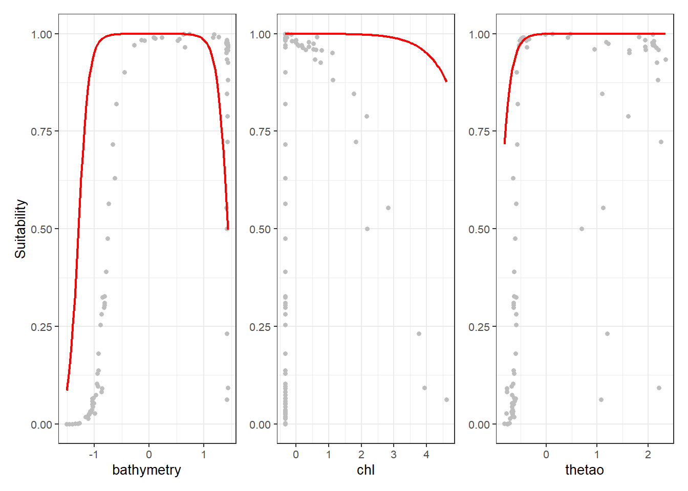
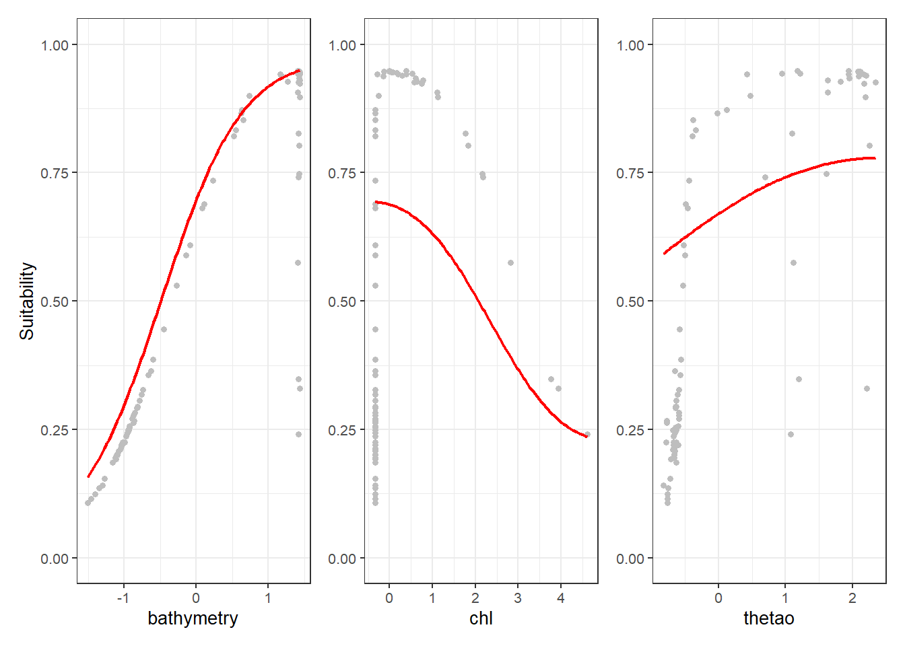
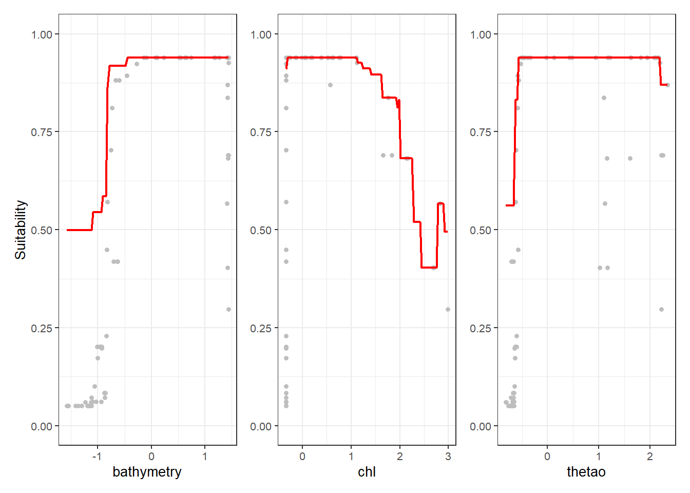
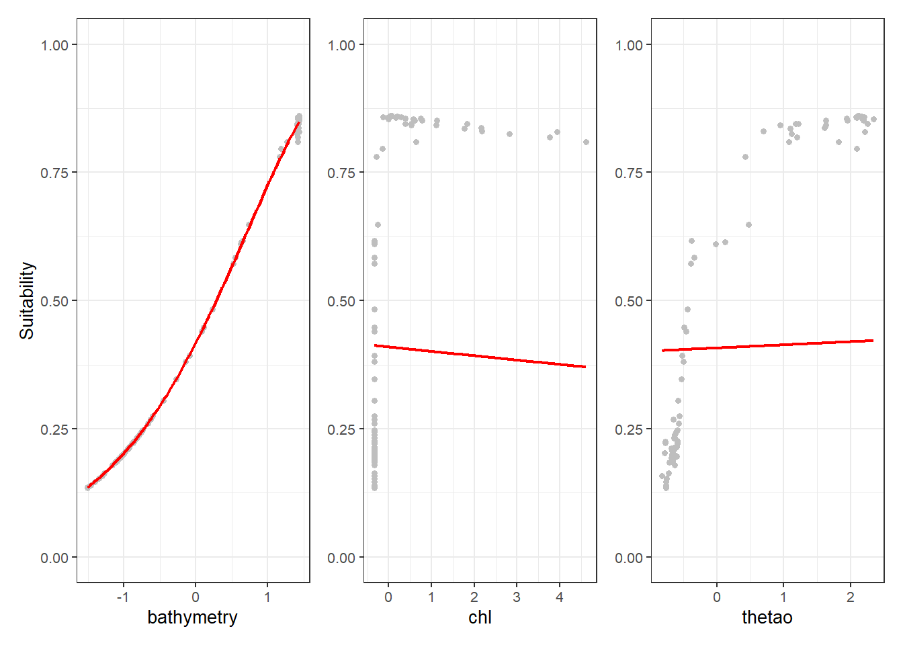
Vamos calcular a contribuição das variáveis. Isso pode demorar um pouco.
#### variable importance ----
models_fitted_no_names <- models_fitted
names(models_fitted_no_names) <- NULL
var_imp_data <- flexsdm::sdm_varimp(
data = occ_sp_filt_psa_part_data,
response = "pr_ab",
predictors = var_ca_sel_names,
models = models_fitted_no_names,
thr = "max_sorensen",
n_sim = 99,
clamp = TRUE,
n_cores = n_cores) %>%
tidyr::pivot_longer(cols = TPR:IMAE, names_to = "metric", values_to = "value") %>%
dplyr::filter(threshold == "max_sorensen") %>%
dplyr::filter(metric %in% c("AUC", "TSS", "SORENSEN", "BOYCE")) %>%
dplyr::mutate(metric = forcats::fct_relevel(metric, c("AUC", "TSS", "SORENSEN", "BOYCE")))
var_imp_data_mean_sd <- var_imp_data %>%
dplyr::group_by(predictors, metric) %>%
dplyr::summarise(value_mean = mean(value),
value_sd = sd(value))
var_imp_data_mean_sd %>%
ggplot(aes(x = reorder(predictors, value_mean), y = value_mean)) +
geom_col(fill = "gray", show.legend = FALSE) +
geom_errorbar(aes(ymin = value_mean - value_sd,
ymax = value_mean + value_sd),
width = .2, linewidth = .2, color = "black") +
geom_text(data = var_imp_data_mean_sd, aes(label = round(value_mean, 2)), size = 3, hjust = 1) +
facet_wrap(~metric, scales = "free_x") +
labs(x = "Predictors", y = "Variable importance") +
coord_flip() +
theme_bw(base_size = 10)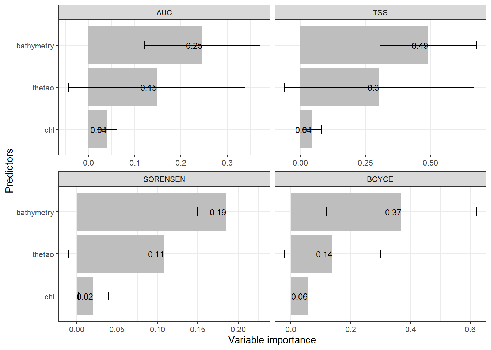
24.4.10 Consenso
Agora podemos fazer um consenso (ensemble) dos modelos.
### ensemble ----
ens_m <- flexsdm::fit_ensemble(
models = models_fitted,
ens_method = "meanw",
thr = "max_sorensen",
thr_model = "max_sorensen",
metric = "SORENSEN")
|
| | 0%
|
|======================================================================| 100%Agora partimos para a parte final, que a predição espacial do consenso. Primeiro, fazermos a predição de cada algoritmo.
# empty raster
predict_ind <- terra::rast()
# methods ----
for(m in names(models_fitted)){
predict_ind_i <- flexsdm::sdm_predict(
models = models_fitted[[m]],
pred = var_ca_sel,
nchunk = n_cores,
thr = "max_sorensen",
con_thr = TRUE)
predict_ind_i <- round(predict_ind_i[[1]][[2]], 3)
predict_ind[[m]] <- predict_ind_i
}
predict_indclass : SpatRaster
size : 960, 622, 4 (nrow, ncol, nlyr)
resolution : 0.05, 0.05 (x, y)
extent : -61.3, -30.2, -38.25, 9.75 (xmin, xmax, ymin, ymax)
coord. ref. : lon/lat WGS 84 (CRS84) (OGC:CRS84)
source(s) : memory
names : gam, gau, gbm, max
min values : 0, 0.000, 0.000, 0
max values : 1, 0.972, 0.939, 1
time : 2000-01-01 UTC 24.4.11 Predição
Agora sim, podemos fazer a predição do consenso.
##### ensemble ----
predict_ensemble <- flexsdm::sdm_predict(
models = ens_m,
pred = var_ca_sel,
nchunk = n_cores,
thr = "max_sorensen",
con_thr = TRUE)
predict_ensemble <- round(predict_ensemble[[1]][[2]], 3)E por fim, fazemos os mapas das predições. Primeiro dos modelos individuais.
# maps ----
tm_shape(brazil_buffer) +
tm_borders() +
tm_shape(brazil) +
tm_fill() +
tm_shape(predict_ind) +
tm_raster(col.legend = tm_legend(show = FALSE),
col.scale = tm_scale_continuous(values = "-brewer.spectral")) +
tm_facets(nrow = 1) +
tm_shape(ca) +
tm_borders(col = "black")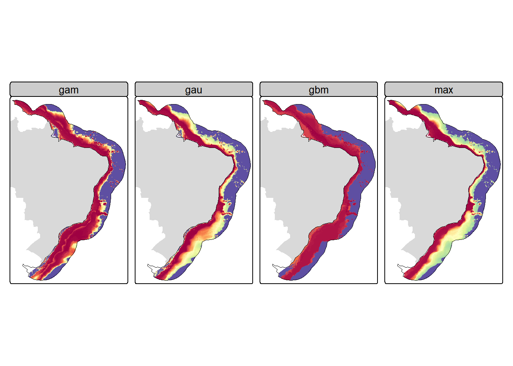
E agora, a predição do consenso.
# maps ----
tm_shape(brazil_buffer) +
tm_borders() +
tm_shape(brazil) +
tm_fill() +
tm_shape(predict_ensemble) +
tm_raster(col.legend = tm_legend(show = FALSE),
col.scale = tm_scale_continuous(values = "-brewer.spectral")) +
tm_shape(ca) +
tm_borders(col = "black")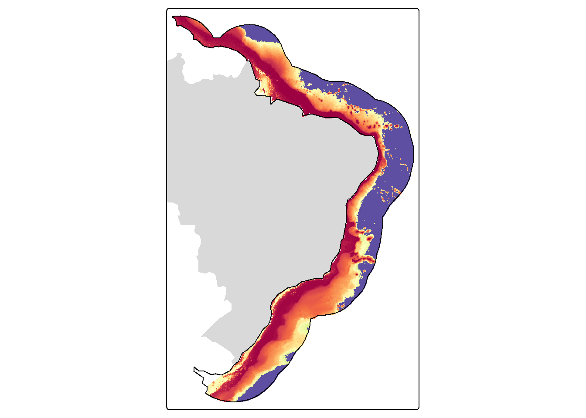